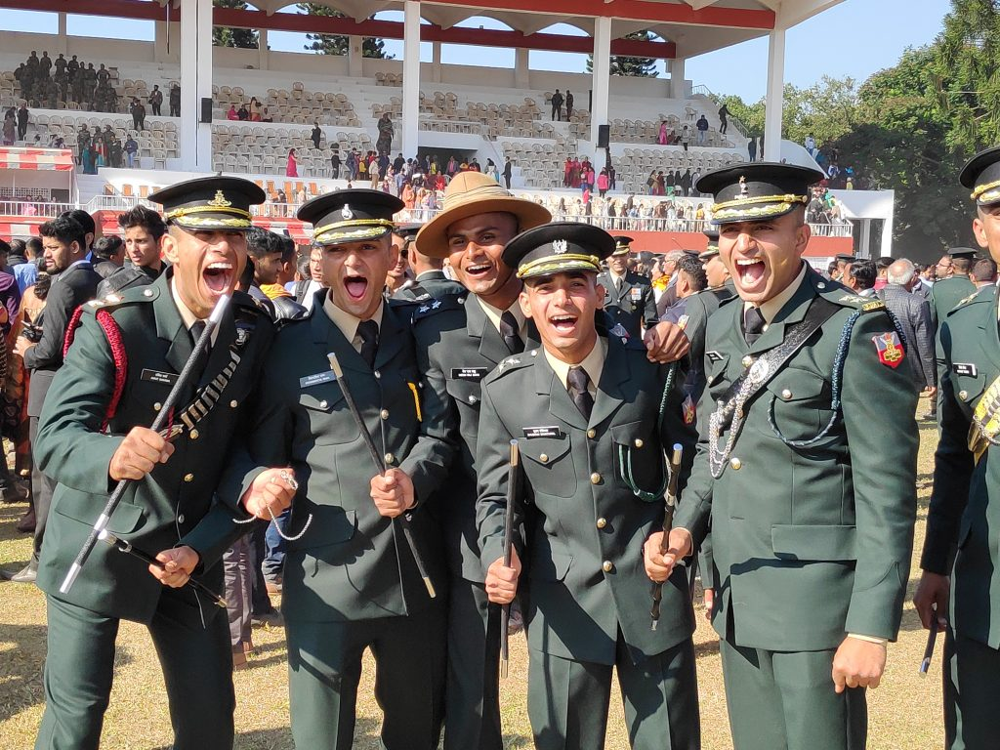
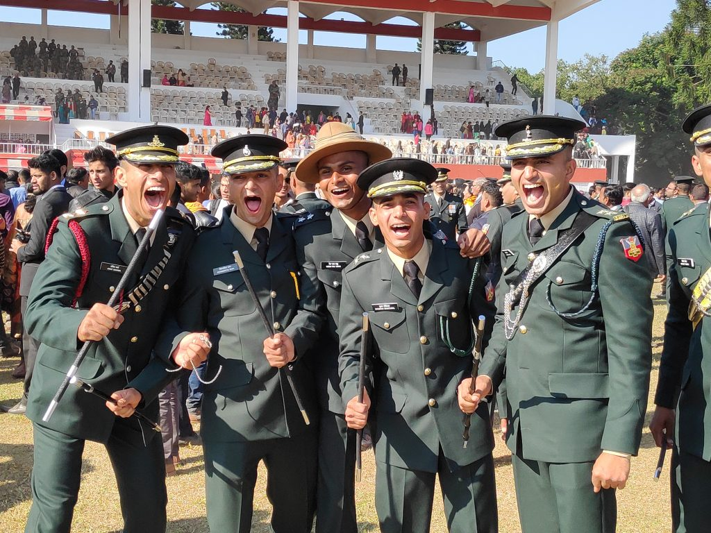

| Academy | State/City |
|---|---|
| Indian Military Academy | Dehradun |
| Indian Naval Academy | Ezhimala |
| Air Force Academy | Hyderabad |
| Officers' Training Academy (SSC Men) | Chennai |
| Officers' Training Academy (SSC Women) | Chennai |
| Parameters | Details |
|---|---|
| Name of exam |
Combined Defence Services Examination |
| Conducted by |
Union Public Service Commission (UPSC) |
| Exam level |
National |
| Exam frequency |
Twice a year (April and September) |
| Exam mode |
Offline |
| Exam stages |
Written exam and SSB Interview |
| Number of applicants |
2,343,43 (In CDS II 2020) |
| Number of appeared candidates |
1,182,50 (In CDS II 2020) |
| Exam fees |
INR 200 for General and OBC male candidates Female, SC, and ST candidates are exempted from fee payment |
| Exam timing |
The time allotted to each paper such as English, General Knowledge, and Elementary Mathematics is two hours |
| Language of question paper |
English and Hindi |
| No of questions |
Elementary Maths: 100 General English: 120 General Knowledge: 120 |
| No.of papers |
Indian Military Academy (IMA), Indian Naval Academy (INA) and Air Force Academy (AFA): Three (English, General Knowledge, and Elementary Mathematics) Officers’ Training Academy (OTA): Two (English and General Knowledge) |
| Total marks |
Written Exam IMA, INA and AFA: 300 OTA: 200 SSB Interview IMA, INA and AFA: 300 OTA: 200 |
| Marking scheme |
One mark for the correct answer One third mark is deducted for wrong answers |
| Exam purpose |
To select candidates as Commissioned Officers in Indian Army, Navy, and Air Force |
| Vacancies |
Total 341 vacancies announced for CDS I exam |
| No of test cities |
More than 70 |
| Official website |
upsc.gov.in |
| Contact number |
011-23385271/011-23381125/011-23098543 |
Note: Candidates who are studying in the final year/semester of Graduation can also apply provided they do not have any backlog upto the last year/semester for which results have been declared at the time of submitting the application form. They are required to submit proof of passing graduation at the time of the commencement of the course.